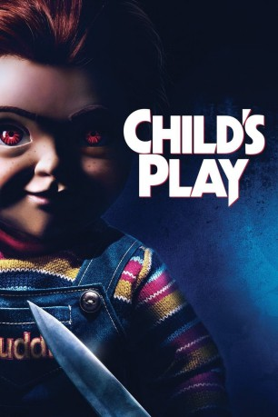

#11749 Child's Play
 
 IMDB-Wertung: 6.0 / 10
IMDB-Wertung: 6.0 / 10  Tomatometer: 64
Tomatometer: 64  Metascore: 48
Metascore: 48 
Karen, eine alleinerziehende Mutter schenkt ihrem Sohn Andy nicht ahnend eine Puppe, Namens "Buddi Doll". Da dieses mit neuen Features ausgestattet ist, hat Chucky ungeahnte Fähigkeiten, um so den Schrecken 2.0 zu verbreiten...
WEBHDRIP MIC
Jahr: 2019
Dauer: 90 Minuten
FSK: 16
Land: USA Studio: United Artists ReleasingTonspuren:
Untertitel:
Auflösung: 1080p (1920x804) Größe: 2795 MB
Genre: Horror
Regisseur: Lars Klevberg
Drehbuch: Tyler Burton Smith, Don Mancini
Soundtrack: Bear McCreary
Darsteller:
 Aubrey Plaza als Karen Barclay
Aubrey Plaza als Karen Barclay Mark Hamill als Chucky
Mark Hamill als Chucky Gabriel Bateman als Andy Barclay
Gabriel Bateman als Andy Barclay Tim Matheson als Henry Kaslan
Tim Matheson als Henry Kaslan Brian Tyree Henry als Detective Mike Norris
Brian Tyree Henry als Detective Mike Norris- Beatrice Kitsos als Falyn
 David Lewis als Shane
David Lewis als Shane- Trent Redekop als Gabe
- Ty Consiglio als Pugg
 Carlease Burke als Doreen
Carlease Burke als Doreen- Marlon Kazadi als Omar
- Mia Bella als Screaming Little Girl
- Kristin York als Jane
 Nicole Anthony als Detective Willis
Nicole Anthony als Detective Willis- Nicholas Dohy als Person in Store
- Olivia Poon als Loving Mom
- Zahra Anderson als Mom
- Amber Taylor als Shane's Daughter
- Hannah Drew als Disappointed Customer
- Amro Majzoub als Wes
- Ben Andrusco-Daon als Ben
- Eddie Flake als Angry Customer
- Veenu Sandhu als Frustrated Customer
 Johnson Phan als Supervisor
Johnson Phan als Supervisor- Kenneth Tynan als Jonga Burger Dude
- Michael Bardach als Homeless Man
- Ariana Nica als Kid #2
- Anantjot S Aneja als Chris
- Romulus Stoicescu als Frustrated Customer's Kid
Datei: X:\2019(A-F)\Child's Play (2019, FSK16, 1920x804).mkv seit 20.09.2019
Festplatte: HD 2018(G-Z)-2019(A-Z)
 Es gibt insgesamt 60 Filme in der Gruppe '2019(A-F)'
Es gibt insgesamt 60 Filme in der Gruppe '2019(A-F)'